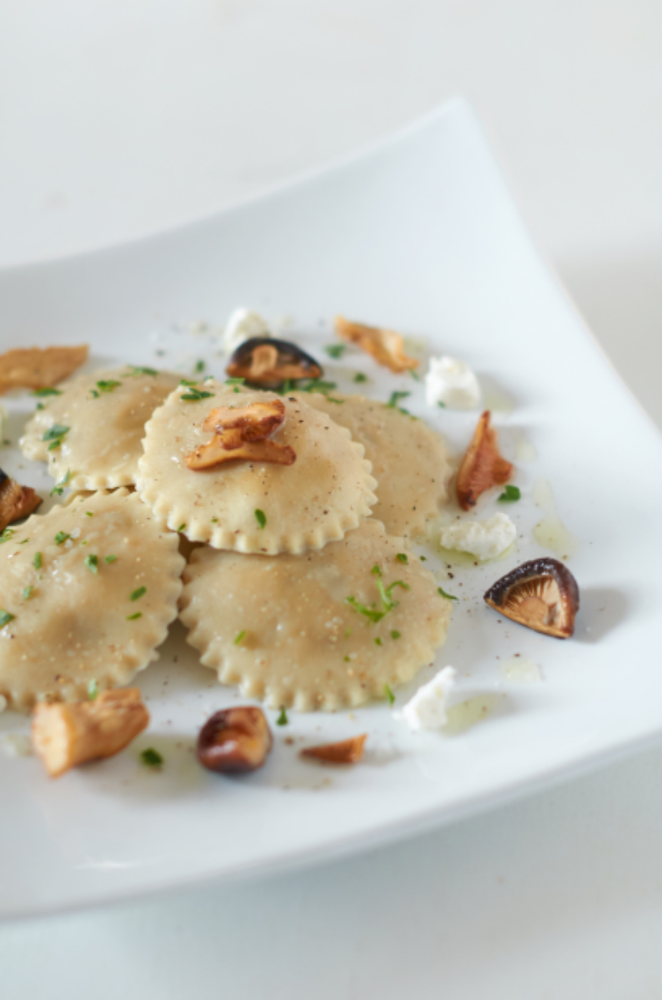

コース・ペアリングのご案内
当店の料理は、固定のメニュー表を持たない「おまかせコース」が中心です。季節や入荷する食材によって内容が変わるため、ご来店ごとに異なる一皿との出会いをお楽しみいただけます。

コース構成イメージ(例示)
前菜から魚料理、肉料理、デザートへと続く、おまかせコースの流れをご紹介します。
※内容は季節や入荷状況により異なります。下記は過去の提供例を参考としてご紹介するものです。現在の提供内容と異なる場合があります。
01
前菜
福島県内の野菜を中心に、複数の小さな一皿を組み合わせてお出しします。過去には新玉ねぎのムースやバーニャカウダなどをご提供しました。
02
魚料理
相馬原釜港から届く鮮魚を使った一皿です。過去にはひらめのマリネや、メヒカリ(目光)のフリットをロメスコソースでご提供した例があります。
03
肉料理
大玉村の「あだたら豚」をはじめ、福島県内の肉を使った一皿です。過去には黒にんにくソースを合わせたヒレ肉のソテーをご提供しました。
04
デザート
ジャージー牛のアイスクリームや、おざわ農園のいちごなど、県内の恵みを使ったデザートをご用意しています。
ワインペアリング
白のヴェルディッキオ、赤のメンヒル・プリミーティヴォなど、料理に寄り添うワインペアリングをご用意しています。お酒を控えたい方には、自家製コーラやジンジャーエールなどノンアルコールの選択肢もございます。
写真はフリー素材(Openverse / CC0・PDM)のイメージであり、実店舗の様子とは異なります。
価格について
コース料金:お問い合わせください
過去にはクリスマス限定コースの提供実績もございます(詳細はお問い合わせください)。
※口コミにてご紹介いただいた「10,000円/人」のクリスマスディナーは、当時の特別メニューの一例であり、現在のコース料金ではありません。
ご予約の流れ
ご予約はお電話またはお問い合わせフォームにて承ります(詳細はご確認中)。記念日のご利用などのご相談も、予約時にお気軽にお申し付けください。